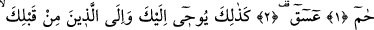
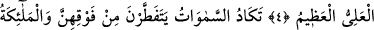
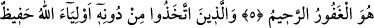
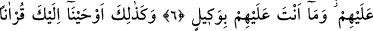
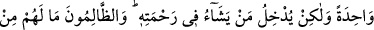
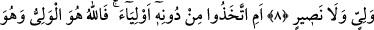
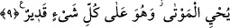

NEREDEYSE
GÖKLER ÇATLAYACAK!
Bismillâhirrahmânirrahîm
1. Hâ. Mîm.
2. Ayn. Sîn. Kàf.
3. Azîz ve hakîm olan Allah, sana ve senden öncekilere işte böyle vahyeder.
4. Göklerde ve yerde ne varsa hepsi O’nundur. O yücedir, uludur.
5. Neredeyse yukarılarından gökler çatlayacak! Melekler de Rablerini hamd ile
tesbih ediyorlar ve yerdekiler için mağfiret diliyorlar. İyi bilin ki Allah çok
bağışlayan, çok esirgeyendir.
6. Allah’tan başka dostlar edinenleri Allah daima gözetlemektedir. Sen onlara
vekil değilsin.
7. Şehirlerin anası (olan Mekke’de) ve onun çevresinde bulunanları uyarman ve
asla şüphe olmayan toplanma günüyle onları korkutman için, sana böyle Arapça bir
Kur’an vahyettik. (İnsanların) bir bölümü cennette, bir bölümü de çılgın alevli
cehennemdedir.
8. Allah dileseydi onları bir tek millet yapardı. Fakat O, dilediğini rahmetine